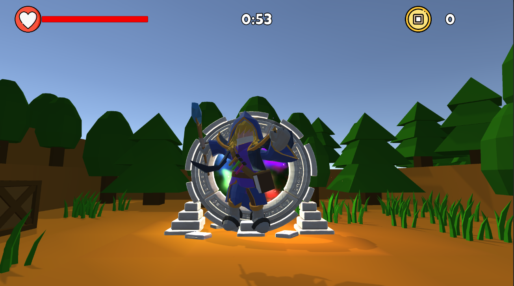
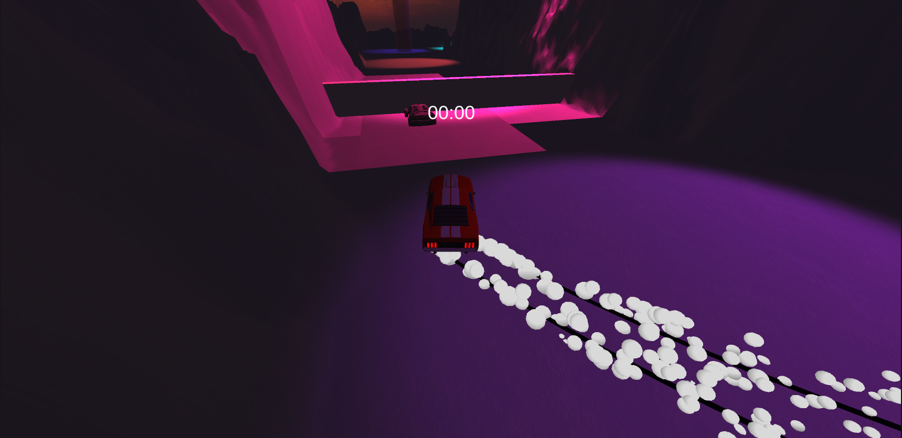
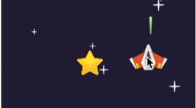

Unity Game Developer
Разработчик игр, специализирующийся на создании увлекательных игровых проектов на Unity. Успешно завершил профессиональный курс по разработке игр и создал несколько полноценных проектов.
Посмотреть работыЯ успешно завершил профессиональный курс по разработке игр на Unity, где получил глубокие знания в геймдизайне, программировании и создании интерактивного игрового контента.
За время обучения я разработал три полноценных игровых проекта в различных жанрах: платформер, гоночную аркаду и 2D космический шутер. Каждый проект помог мне развить навыки работы с физикой, искусственным интеллектом врагов, системами прогрессии и игровой механикой.
Стремлюсь создавать качественные и увлекательные игры, которые дарят игрокам незабываемые эмоции и впечатления.
Разработка 2D и 3D игр, работа с компонентами, префабами, системой анимации и физикой
Написание игровой логики, скриптов управления, систем взаимодействия и механик геймплея
Разработка и отладка кода, работа с инструментами разработчика и оптимизация производительности
Проектирование уровней, балансировка сложности, создание игровых механик и систем прогрессии
Создание искусственного интеллекта врагов, систем патрулирования и боевого поведения
Работа с физикой Unity, создание реалистичных взаимодействий и динамических объектов

Динамичный платформер, где игрок должен пройти сложный путь от старта до финиша, преодолевая множество препятствий и опасностей. Игра представляет собой захватывающее испытание на ловкость и реакцию.
Концепция игры: Игрок управляет персонажем, который должен добраться до финишной точки, используя прыжки, бег и взаимодействие с окружением. Каждый уровень тщательно спроектирован для создания увлекательного и сбалансированного игрового опыта.
Технические особенности: Использованы компоненты Unity для физики и столкновений, написаны скрипты на C# для управления персонажем, AI врагов, активации ловушек и системы телепортации. Особое внимание уделено оптимизации производительности и плавности геймплея.

Адреналиновая гоночная аркада, где игрок соревнуется с противниками на скоростной трассе, полной препятствий и опасностей. Цель - первым пересечь финишную черту, проехав через все чекпоинты и обогнав соперников.
Концепция игры: Быстрая динамичная гонка, где важна не только скорость, но и умение маневрировать, избегать препятствий и использовать особенности трассы для обгона противников.
Технические особенности: Разработана продвинутая система физики автомобиля с использованием Wheel Colliders Unity. Создан AI навигации для противников с использованием waypoint системы. Оптимизирована производительность для плавного геймплея на высоких скоростях.

Динамичный космический 2D шутер, где игрок управляет космическим кораблем в бескрайнем космосе, сражаясь с враждебными силами. Цель - уничтожить вражеский корабль, выживая в потоке метеоритов и вражеского огня.
Концепция игры: Интенсивные космические бои с элементами стратегии и быстрой реакции. Игрок должен одновременно атаковать противника, уклоняться от опасностей и собирать улучшения для усиления своего корабля.
Технические особенности: Использована 2D физика Unity для столкновений и движения объектов. Разработана система пулов объектов для оптимизации производительности при большом количестве снарядов и метеоритов. Создана гибкая система улучшений с возможностью легкого добавления новых power-up'ов. Реализована система генерации контента для бесконечного геймплея.
Заинтересованы в сотрудничестве или хотите обсудить проект? Буду рад ответить на ваши вопросы!